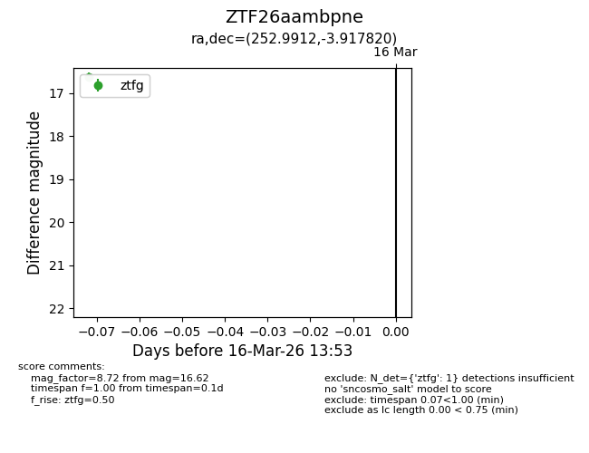
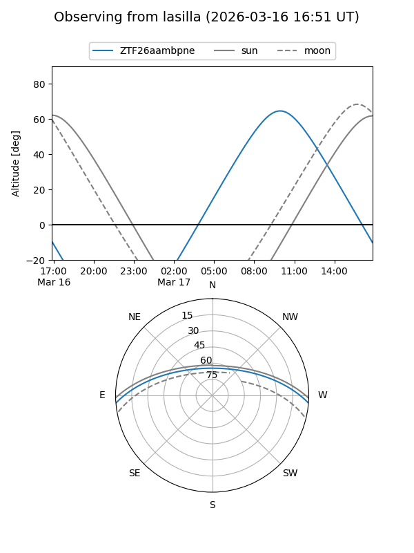
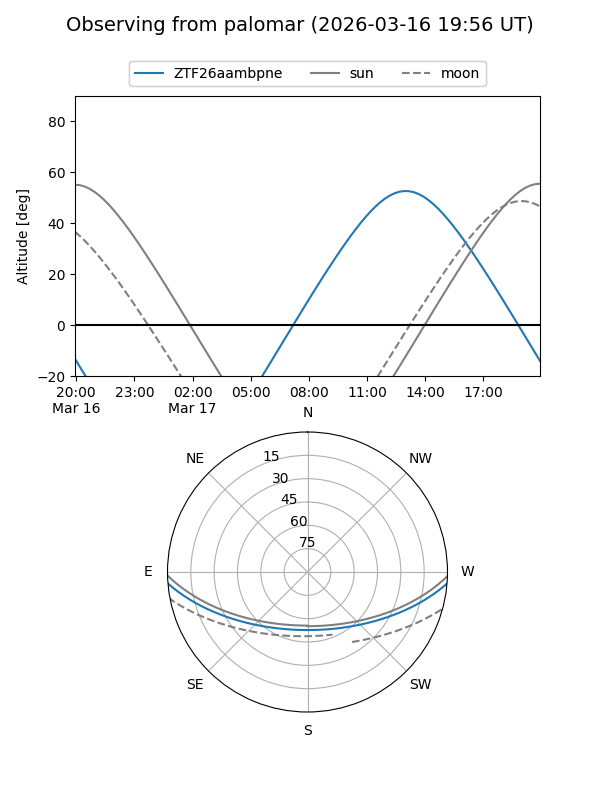
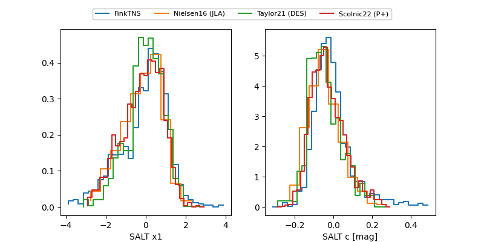

ZTF26aambpne
Target ZTF26aambpne at 2026-03-16 13:55
Aliases and brokers:
FINK: link
Lasair: link
ALeRCE: link
alt names
ZTF26aambpne (ztf,fink_ztf)
Coordinates:
equatorial (ra, dec) = 252.9912,-3.91782
equatorial (HMS+DMS) = 16:51:57.89,-03:55:04.15
galactic (l, b) = (14.5578,+24.26954)
Flags:
Photometry:
last ztfg=16.62
1 ztfg detections
Lightcurve

Visibility


Additional plots
